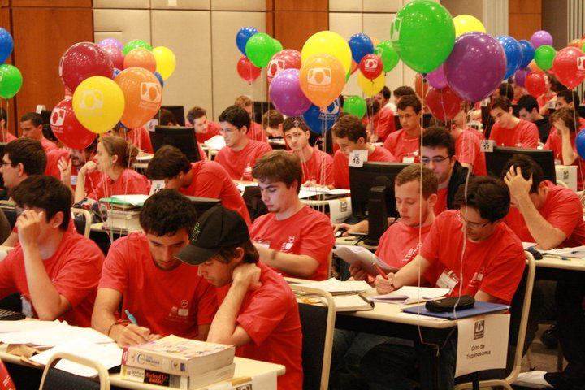

cout << "Como?" << endl;(){
i++
Por: Fellipe Augusto Alves Gurgel
Como?
Não sei você, leitor, mas eu estou muito empolgado para aprender algumas técnicas de programação para maratonas, rs.
Algumas coisas se fazem necessárias para competir:
A equipe:
Durante os treinamentos ou minimaratonas, geralmente, consideram-se os competidores individualmente. Porém, nos campeonatos regionais, nacionais e internacionais são formadas equipes de 3 alunos de graduação ou pós-graduação e um coach (treinador, que deve ser um docente da instituição de ensino, geralmente um ex-competidor).

Equipes de Maratona
[Fonte: Blog do Kunigami]
Geralmente, os competidores cursam na área de Tecnologia, tais como Ciência da Computação, Engenharia da Computação, Sistemas de Informação, Gestão da Informação, etc... Ou cursos afins (Matemática, Física, Engenharia Elétrica, etc). Mas não existe restrição quanto ao curso do competidor.
Treinamentos ou minimaratonas, cujo o objetivo é justamente ensinar o formato do concurso, ou até mesmo as competições locais, podem adotar regras próprias como duração e número de membros em equipe, bem como a elegibilidade destes.
Nas competições regionais, nacionais e internacionais oficiais (mais precisamente da ICPC - detalhada na próxima página) todos os competidores devem seguir algumas restrições para serem elegíveis:
- Ter participado de no máximo uma final mundial do concurso da ACM;
- Ter participado de, no máximo, 4 (quatro) regionais sul-americanas do concurso;
- Ter até 23 anos;
- Estar nos primeiros 5 anos de graduação ou pós-graduação;
A Preparação
Com uma equipe, mesmo que sejam somente amigos reunidos para estudarem o material e competirem entre si, esta é uma das horas que trará mais efeitos benéficos durante a competição.
Como em qualquer campeonato, exige-se grande dedicação dos competidores com uma carga pesada de treinamento. E se a intenção da sua equipe é competir nos concursos oficiais, todos devem estar bem interagidos, integrados e bem preparados para a pressão dessas competições. Portanto, o treino é essencial.
A Informação
Eu poderia encher essa página de tutoriais e dicas e mastigar toda a informação aos leitores, mas não... Sabemos o quanto a pesquisa e a curiosidade são diferenciais imensos para os competidores, os profissionais e os estudantes. Então, o máximo que eu vou disponibilizar são algumas fontes interessantíssimas para você procurar saber mais sobre os treinamentos, as dicas e as ferramentas necessárias, beleza? Estou apenas dando oportunidade para você conhecer a sua maneira de otimizar uma busca, uma leitura, etc...
Alguns links:
- ACM;
- Como se Preparar? Pelo Instituto de Matemática e Estatística da USP (com sites, provas antigas, competições online, livros e muito, muito mais... Genial!);
- Algar Telecom;
- UFMG;
- OBI 2013;
- Preparação por Vinícius Fortuna;
- URI - Juíz Online;
- UVa - Juíz Online;
Caso não goste das fontes, fique à vontade para sugerir outras. Acesse Cartas do Leitor.
Agora é com você!
[Fonte: Gestão de projetos ágeis]
O segredo é procurar nos lugares certos. Aconselho fortemente que você procure a existência de um departamento ou uma faculdade que possa lhe informar sobre competições na sua região. Geralmente, Universidades ou grandes empresas de tecnologia possuem informações interessantes, equipes formadas, etc.
Não me odeie por não disponibilizar muita informação e pedir para que procure pessoas próximas, mas o seu desenvolvimento não depende de mim; a curiosidade, a motivação, a coragem e a determinação ao buscar uma informação é o que já começa a te diferenciar em qualquer competição. #FicaDica
Referências:
}